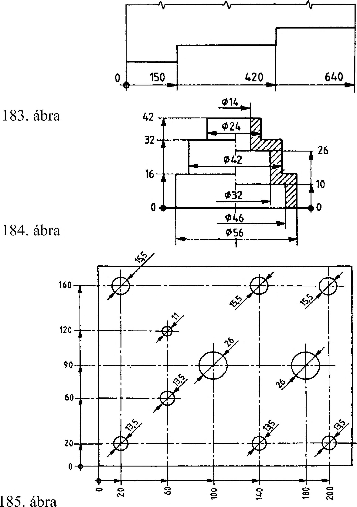

8. Mérethálózat Célszerű, ha a szerkesztési, a gyártási és az ellenőrzési bázisfelületek egybeesnek. Ez a méretmegadási mód lehet: - párhuzamos méretmegadás , amikor az egyes méretvonalak egymással párhuzamosan helyezkednek el, olyan távolságra, hogy a méreteket jól el lehessen helyezni; - összevont (halmozott) méretmegadás , amely a párhuzamos méretmegadás egyszerűsítése. Ott alkalmazható, ahol leolvasási nehézségek nem merülnek fel. A közös kiindulási pontot a legalkalmasabb helyen kell elhelyezni, és kb. 3 mm átmérőjű üres körrel és 0 méretszámmal jelölni. A közös méretvonal végpontja nyílban végződik. A méretszámokat a méretvonal-határolók közelében helyezzük el a 182. és 183. ábra szerint. A méreteket az egyes vetületeken a külső és belső tagoltságnak megfelelően csoportosítani célszerű. Ezt kívánja meg a könnyebb áttekinthetőség és a megmunkálás folyamata is. Ha a tárgynak ugyanazon elemét nézetben és metszetben egyaránt ábrázoljuk, akkor a külső méreteket a nézeten, a belső méreteket a metszeti képen célszerű megadni (184. ábra). A nyersen maradó és a megmunkált felületek meghatározásához a szükséges méreteket is célszerű különválasztva csoportosítani. Az összevont (halmozott) méretmegadást két irányban is alkalmazhatjuk, lemezen levő lyukak elhelyezésének megadására. Ebben az esetben a kiindulási pontokat a 185. ábra szerint helyezzük el. 8.7.4. Táblázatos méretmegadás Ezt a méretmegadási módot a két irányban alkalmazott összevont (halmozott) méretmegadás helyett alkalmazhatjuk. A helyzetmeghatározó méretpárhoz hozzárendeljük a furat átmérőjét is. A közös kiindulási pontokat itt is a legalkalmasabb helyen kell elhelyezni, és kb. 1 mm átmérőjű ponttal és 0 méretszámmal jelöljük (186. ábra). 8.7.5. Kombinált méretmegadás Mint az elnevezés is mutatja két méretmegadási mód ötvözetéről van szó. A méretek egyenkénti (láncszerű) és az összevont (közös pontból kiinduló) méretmegadásának együttes alkalmazását jelenti (187. ábra). A - \ - V 182. ábra 8.7.6. Méretek elosztása a rajzon A mérethálózatnak határozott rendszerben kell tartalmaznia az előző pontokban tanultak szerint azokat a méreteket, amelyek a munkadarab meghatározásához szükségesek. A méretek célszerű elosztása a rajzon nemcsak a rajz esztétikai értékét növeli, de könnyíti a megértést is. Forgásfelületek tengelyirányú vetületén sok a koncentrikus kör. Az átmérők méreteit tehát inkább a hengerfelületek másik vetületén adjuk meg. A főméreteket úgy adjuk meg, hogy azokat könnyen megtalálhassuk a rajzon. Az értelemszerűen összefüggő méreteket a legjellemzőbb vetületen összefüggő mérethálózatban kell megadni, pl. a reteszhorony szélességét, mélységét (188. ábra). Az egy munkafolyamathoz tartozó méreteket lehetőleg egy vetületen adjuk meg (189. ábra). 186. ábra 187. ábra 188. ábra 189. ábra 45
